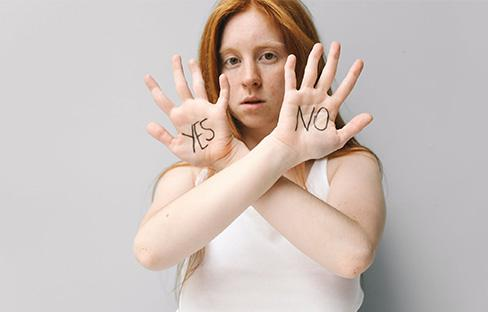
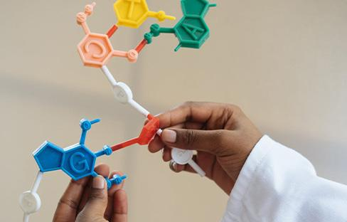

-
 主动性人格测试
主动性人格测试
人格 高级测试在团体组织中，你是那个会主动改变环境，为自己创造有利机会的人吗？你会采取有效行动及时解决问题吗？测一测了解你在工作中的人格倾向如何。
-
 职业兴趣测评
职业兴趣测评
兴趣 高级测试职业和专业密切相关，专业产生于职业需求、因职业需求而确立，每个专业都有自身对应的职业方向，从这个意义上来说，选专业就是选职业，确定自身的专业方向更是一个人职业生涯的开端。
-
 大五人格测试
大五人格测试
人格 高级测试想知道你是怎样一个“特殊”的你吗，不妨借助测试来对自我探索一番，苏格拉底说，认识你自己，在所有的探索中自我探索总是让人着迷而又其乐无穷，还等什么，快点击马上开始吧！
-
 测你的合作/竞争倾向
测你的合作/竞争倾向
倾向 高级测试工作学习中你更善于团队合作还是独立完成任务？合作必不可少，竞争则是对自我发展的需求，两者并不冲突。想知道你的合作/竞争偏向吗，一试便知。
-
专业认同度测试
态度 认同 高级测试不喜欢现在的专业？总觉得有哪里不够满意？上课的时候总是提不起劲？缺乏热情，浑浑噩噩却又不知该何去何从，来测测你的专业认同度吧，或许它能帮你厘清你迷茫困惑的现状，为你的下一步选择点一盏明灯。
-
幸福指数测试
态度 指数 高级测试关于什么是幸福，人类进行了上千年的思考，试图从各种途径阐释幸福的由来和获得幸福的方法，而现代社会，随着物质生活的满足和丰富，人们越来越关注精神的愉悦和满足，那么问题来了：你的幸福感如何？想知道吗，来测测看吧。
-

职业价值观测评
态度 价值观 高级测试职业价值观是指当一个人面临职业选择的时候，他无论如何都不会放弃的职业中至关重要的东西。研究表明职业价值观是内心深处对自己的看法，它是自己的才干、价值观、动机经过自省后形成的，职业价值观可以指导、约束、或稳定个人的职业生涯。
-
自我觉察能力测试
能力 高级测试你的自我觉察处于何种水平呢？针对个人又有什么较好的方法进行自我监管呢？测试报告会给你答案。
-

科学研究能力测评
能力 高级测试科学研究是创新型人才不可缺少的核心素养之一，你是否具有这方面的潜质？一测便知！
-
测你的生涯控制点
生涯 高级测试归因指个体根据信息和线索对行为原因进行推测与判断。不同的归因方式决定了你对自我生涯的看法和行动，显然积极的归因方式更有利于个体或关系的发展。想知道你在生涯发展中是怎样的归因者吗，来测测看吧。
-
最优化倾向测试
决策 高级测试当你做小的决定时，应当依靠你的大脑，把利弊罗列出来，分析并作出正确的决定；当你做大的决定，如寻找终身伴侣或寻找理想时，你就应该依靠你的潜意识，因为这么重要的决定必须在你的心灵深处找到依据。-弗洛伊德（精神分析学派，著有《梦的解析》）
-
测职业决策风格
决策 高级测试有人喜欢独立专断，有人喜欢依赖他人，有人喜欢收集信息，有人喜欢凭感觉做决定，有人爱做梦，有人喜务实，有人速战速决，有人延迟满足，你呢？
-
测你的生涯适应力
生涯 高级测试职业生涯是一个漫长的过程，也是一个动态的不断调整的过程，面对未来未知的职业长路，不妨从现在开始，认清自己，不断探索，为未来的职业之旅绘一份行路指南。